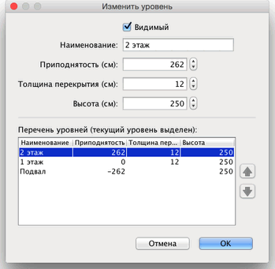

Вы можете редактировать имя, приподнятость и высоту уровня, дважды кликнув на его вкладку или, выбрав в меню пункт
План > Изменить уровень...
Панель изменений уровней позволяет редактировать атрибуты, а так же показывает таблицу содержащую все уровни дома,
где редактируемый уровень выделен цветом.

Толщина перекрытия используется для вычисления вертикального бордюра в 3х мерном просмотре. Эта поверхность
будет видна вокруг отверстий в полу и на границе балконов.
Приподнятость уровня может быть как положительной, так и отрицательной. В последнем случае земля, в 3х мерном просмотре
будетавтоматически выкопана для каждого предмета мебели, стен или комнат, добавленных на подземный уровень. Эта возможность
может быть использована для добавления плавательного бассейна в землю или для создания подвалов с одним или несколькими
уровнями. |